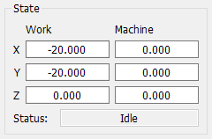

The State panel displays the current work‑ and machine‑coordinates, as well as the operating mode of the CNC controller.
Coordinates are shown in output fields arranged horizontally in the order: X, Y, Z.
| Mode | Description |
|---|---|
| Idle | The controller is ready to receive commands. |
| Alarm | An emergency state. |
| Run | Executing a control program (CP). |
| Home | Searching for the home position. |
| Hold | Motion is paused, awaiting further continue/reset commands. |
| Check | Incoming G‑code is interpreted without actual tool movement. |
| Door | Door‑sensor triggered mode. |
| Jog | Executing special jogging commands. |
| Sleep | Low‑power standby mode. |
In the same field, states that are not related to the controller’s operating mode are shown:
The background color of the Status field may change depending on the state.